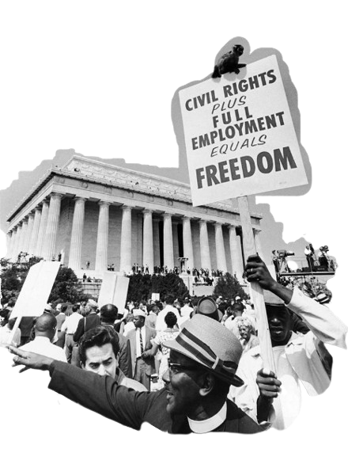

history of
racism

the origins of racism
racism as a structured belief system began to take shape during European colonization in the 15th century, although discrimination based on difference existed much earlier. As European empires expanded across Africa, Asia, and the Americas, they used race to justify their domination. The idea that white Europeans were biologically or culturally superior became a tool to legitimize conquest, violence, and exploitation. This mindset laid the foundation for centuries of racial inequality, built into laws, education, and global trade.
slavery and colonial rule
the transatlantic slave trade is one of the most brutal chapters in the history of racism. Between the 16th and 19th centuries, over 12 million Africans were forcibly taken to the Americas as slaves. They were treated as property and subjected to horrific conditions. Racist ideologies portrayed Black people as inferior and justified slavery as “necessary.” At the same time, colonized people across Asia, Africa, and the Americas were exploited, dehumanized, and stripped of their rights under European colonial rule, often facing violence, forced labor, and cultural erasure.
segregation and civil rights
even after slavery ended, racism remained embedded in many societies. In the United States, Jim Crow laws legalized segregation and denied Black citizens equal rights. In South Africa, apartheid did the same, separating people by race and limiting freedom for non-white populations. But resistance grew. The 20th century saw powerful civil rights movements, led by figures like Martin Luther King Jr., Rosa Parks, and Nelson Mandela. These movements challenged unjust systems through protests, legal action, and education — leading to major changes in law and society.
racism today
though many laws have changed, racism continues to affect people worldwide. Today, it often appears through unequal access to education, healthcare, and justice. Stereotypes and unconscious bias still influence how people are treated based on their race. In response, modern movements like Black Lives Matter have called attention to systemic racism and demanded change. Understanding how racism evolved over time helps us see that it’s not just part of the past — it’s a problem we must still confront today.